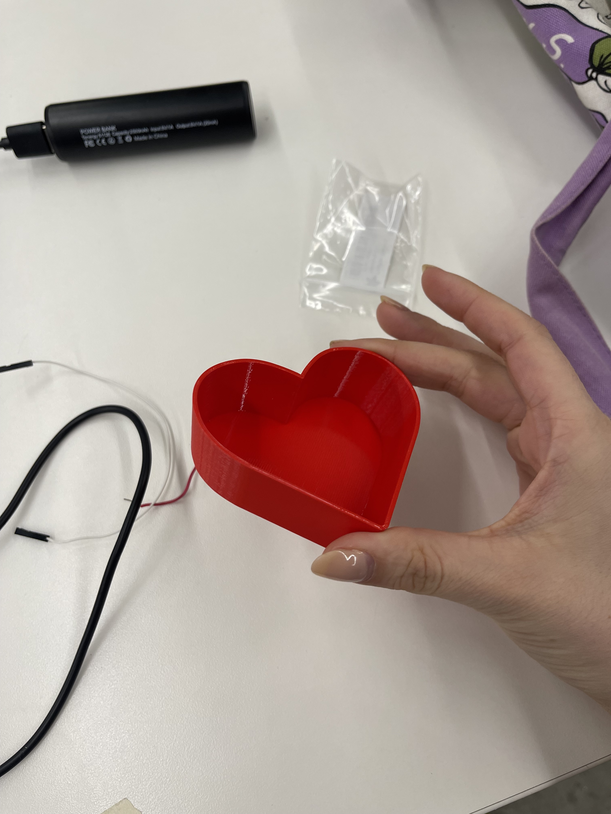

<style>
h3 {
color: DeepPink;
}
h2 {
color: DeepBlue;
text-align: center;
}
img {
display: block;
margin-left: auto;
margin-right: auto;
}
</style>
<div class="container-fluid">
### Week 8: CNC Milling, Molding and Casting
<h1> My Silicon Heart</h1>
<p1>
This week was a tricky one BUT I did end up with a simple final project that was squishy and nice :)
<br> <br>
So first of all I initially wanted to utilise the SRM-20 to make a more complicated design to cast in silicon. I thought it would be fun to make something wearable, so I planned on making a mold for a small rose pendant. The design I was working with was not a mould, but an STL of the physical object I wanted to produce: so I watched an online tutorial about how to create a mould <a href="https://www.youtube.com/watch?v=f-Zs3lx5OQA">here.</a>
<br> <br>
Using these steps I practiced creating a super simple mold on Fusion 360. The next step was to use my STL file to create a fusion mold. I <a href="https://www.youtube.com/watch?v=tVGtG-UjlYg">learned to convert an STL file.</a> Despite my mesh being very complicated, amazingly it worked. However, once I started to try and interact my new body piece with another piece and cut away the rose shape, my computer ran into a lot of issues. This is where my troubles began—I really wanted to bring my intricate rose to life but try as I might, Fusion 360 would not load any edits I tried to make. *Crucial lesson here*: there is clearly a limit to the complexity of mesh Fusion can deal with, and I probably should have given up a little earlier than I did.
<br> <br>
However, armed with too much hope, I worked with Kassia on the idea of just cutting out the STL file out of wax on the SRM-20—I was a little confused about how the mould would work. *Crucial lesson two* a mold is what you would pour things into, and not what you pour it in. Luckily(?) we spent many hours that day not able to make the SRM20 work and I was not able to carve out my incorrectly configured rose mold. <br>
In later office hours, Nathan explained to me the obvious—that I would still need a structure surrounding the rose in order to make a mould, which I could then use to create my final piece. (Please note I promise I'm not super stupid, I had to miss class owing to illness and was very much catching on one step at a time!!).
<br> <br>
This is when I gave up on the rose file and simplified a LOT: I learned many lessons about what I did wrong, and now also knew what was wrong with the SRM. But in office hours Gabby pointed out that my mould would be incredibly simple to 3D print. So that's what I ended up doing:<br> </p1>

<p2>
Next I went to pour the silicone into the mould. I first sprayed the heart with mould release and let it set for 15 minutes. During that time, I mixed the parts A and B of the silicone in equal meausure, using a 0.1 sensitivity scale to ensure the same quantity of each part. I mixed both parts vigourously: one was a thick white liquid while another was a thin blue liquid. They together formed a thick but pourable blue liquid. The instructions read that the liquid was good to use for 30 minutes after being mixed, so I made sure to quickly move onto the next step of pouring it into the mould.
<img src="pouredmould.jpg" alt="heart mould with blue silicon" width="500" class="center">
<br> <br>
I was worried while pouring that the silicon wouldn't come out of the plastic easily: luckily it seems the mould release spray was effective, and with some gentle easing, the silicone heart came easily out of its casing following a 24-hr resting period. <br> <br>
<video controls width="500">
<source src="squishy.mp4"
type="video/mp4">
</video>